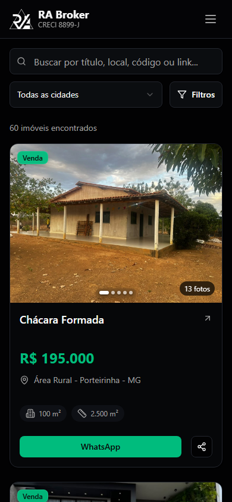

Catálogo RA Broker
Desenvolvi para a imobiliária RA Broker um catálogo digital dos imóveis de Porteirinha e região, com busca por cidade e filtros por tipo e faixa de preço.
Next.js · React · Firebase
Interface real do catálogo público.

Contexto
A RA Broker atua em Porteirinha e região. O catálogo reúne os anúncios da imobiliária em um endereço próprio.
A solução
A listagem permite refinar a busca e consultar os anúncios. A ficha de cada imóvel reúne fotos, preço e características.
Repositório público